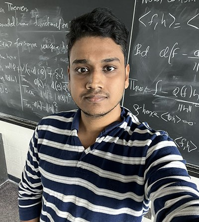
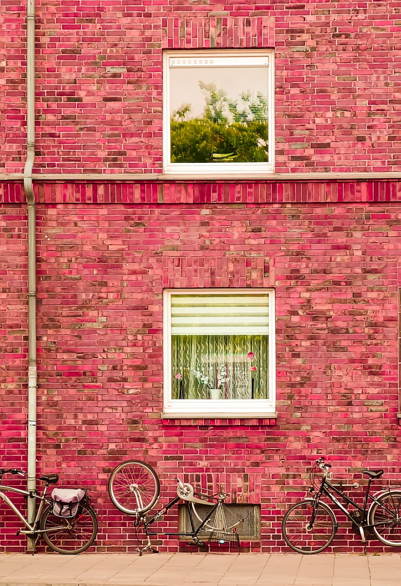
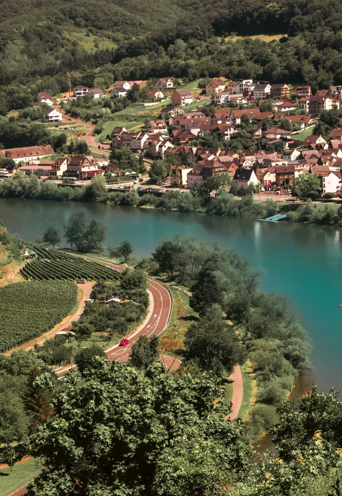
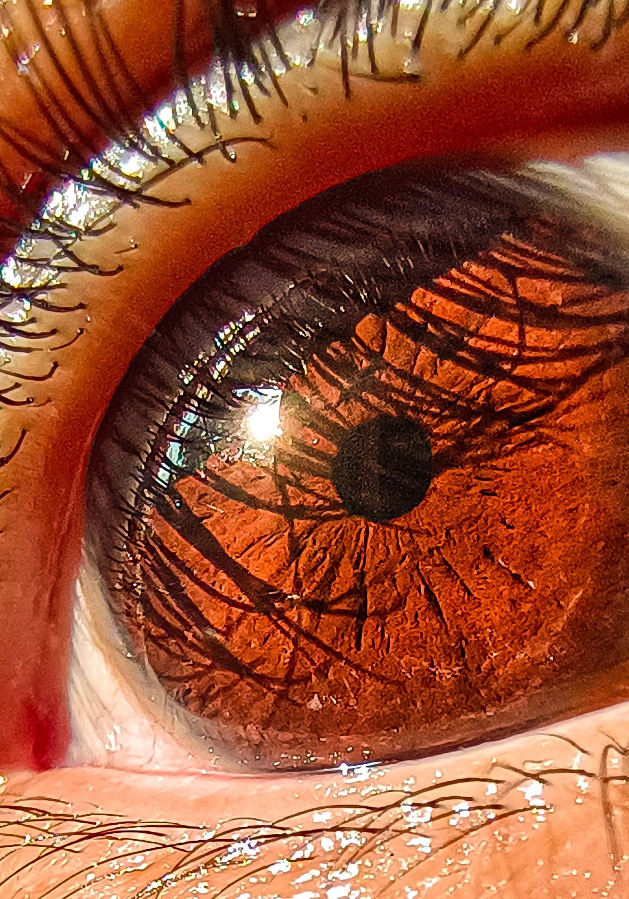

Second-year graduate student in Mathematics
Akshay Sant
अक्षय संत
I am a second-year graduate student in Mathematics at the University of Rochester. My primary research interests are computational number theory and arithmetic geometry. I work with Prof. Thomas Tucker on computational algebraic number theory projects and have recently collaborated with Prof. Alex Iosevich on number theory and learning theory. During Summer 2026, I am teaching MATH 162: Calculus IIA as an Adjunct Instructor at the University of Rochester. Before joining the graduate school in Mathematics, I obtained an MSc degree in Mathematics from RPTU Kaiserslautern, Germany. Between my master's degree in Germany, I spent 2 semesters at the University of Bonn as a partially cross-registered student. I have also worked as a research assistant under the supervision of Dr. Sanon at DFKI, Germany, before coming to Rochester, NY.
asant2@ur.rochester.edu
Rochester, New York

2026 in brief
Computational Number Theory
Arithmetic Geometry
Computational Algebra
Elliptic Curves
Analytic Number Theory
Number Theory & Statistical Learning Theory
Preprints and Publications
Preprint · 2026
Arithmetic functions and learning theory
Connects analytic number theory with computational learning theory through Fourier-ratio and sample-complexity lower bounds for classes containing the Möbius function.
Preprint · 2026
Elliptic curves, Fourier ratio, and sampling complexity
Studies normalized Frobenius traces in the Legendre family from the viewpoint of Fourier complexity, sparse approximation, and bounded-precision reconstruction.
Conference paper · 2025
Defending Against Adversarial Attacks in 6G: Practical Mitigation Approach ↗
Published in the proceedings of the 2025 IEEE International Balkan Conference on Communications and Networking (BalkanCom), Ljubljana, Slovenia.
Teaching
My teaching experience ranges from foundational calculus and probability to abstract algebra, real analysis, commutative algebra, and elementary number theory.
Summer 2026
Adjunct Instructor · University of Rochester
MATH 162: Calculus IIA
As an instructor, I prepare and deliver lectures (Monday to Thursday, 9 AM-11.30 AM EST), develop course notes, and assessments, and grade exams.
Spring 2025–Present
Teaching Assistant and Grader · University of Rochester
Classroom Teaching Assistant: MATH 141 (Calculus I) and MATH 164 (Multivariable Calculus).
Grader: MATH 235 (Proof-Based Linear Algebra) and MATH 448 (Computational Topology).
2016–2020
Lecturer and Assistant Teacher · India
Taught courses such as calculus, probability, abstract and linear algebra, real analysis, sequences and series, commutative algebra, and elementary number theory.
Education
2025–Present
University of Rochester · Mathematics Ph.D. Program
Second-year graduate student
2025–2026: Completed all requirements for the M.A. in Mathematics; the degree is expected to be conferred in August 2026. Passed all Ph.D. preliminary examinations.
Graduate coursework includes Galois theory, complex analysis, and Sobolev spaces, algebraic curves, algebraic number theory, measure theory, algebraic topology, general topology, differential geometry, probability, schemes, and abelian varieties.
Completed a summer reading course in algebraic geometry with Prof. Thomas Tucker and currently working with him on computational projects related to Arithmetic dynamics and algebraic number theory.
2021–2024
RPTU Kaiserslautern-Landau
M.Sc. Mathematics International · Final grade: Sehr gut (Very good)
Thesis: Modularity and Fermat’s Last Theorem. Studied elliptic curves, modular forms, Galois representations, and abelian varieties, with the modular curve X0(38) as a computational and theoretical case study.
2022–2024
University of Bonn · Department of Mathematics
Partial cross-registered student at the University of Bonn
Coursework included Analytic Number Theory, the Langlands Program, Algebraic Geometry (Schemes), group cohomology, and introductory local and global class field theory.
2015–2018
Ramnarain Ruia Autonomous College · University of Mumbai
B.Sc. Mathematics · 94.96% · College Rank 2
Broad training in mathematics, statistics, and physics followed by advanced specialization in theoretical and applied mathematics.
Recent Experience
German Research Center for Artificial Intelligence (DFKI)
Research on adversarial attacks in machine learning, with emphasis on classification, mitigation strategies, optimization, and performance evaluation for secure AI applications.
Fraunhofer ITWM
Generated and analyzed large geometric and seismic-survey datasets using Python and SQL; developed indexed retrieval workflows and benchmarked performance.
RPTU Department of Mathematics
Contributed programming and literature-review work to OSCAR, an open-source computer algebra system for computational algebraic geometry.
More About Me
Skills
Programming
Python, C++, Julia, and SQL
Computer algebra
Magma, Macaulay2, and Singular
Research workflow
LaTeX, GitHub, scientific computing and data analysis
Languages
English (C1; IELTS 7.5), German (B2.1 coursework), Marathi, Hindi, and beginner Sanskrit and Japanese
Awards
- 2024Graduate School of Mathematics Graduation ScholarshipRPTU Kaiserslautern-Landau
- 2022-2024DeutschlandstipendiumGerman government scholarship with participating sponsors
- 2022-2024DAAD-STIBET ScholarshipScholarship for master's studies at RPTU
- 2015-2018INSPIRE ScholarshipDepartment of Science and Technology, Government of India
- 2016Madhava Mathematics CompetitionMumbai topper
Talks
- May 2026Arithmetic Functions and Complexity TheoryInternational Conference on Fractals and Related Areas
- Apr 2026Modularity and Fermat's Last TheoremGraduate Seminar, University of Rochester
- Mar 2026Selected Algebraic Computations in SageMathUniversity of Rochester
- Jul 2024Modularity and Fermat's Last TheoremJoint Block Seminar on Algebraic Number Theory, RWTH Aachen
- Sep 2023An Arithmetic Function Related to the Twin Prime ConjectureMax Planck Institute for Mathematics, Bonn
Photography
Photography is one of the ways I slow down and pay attention. I enjoy capturing landscapes, travel moments, textures, and small visual stories that would otherwise pass by unnoticed.



Life Beyond Mathematics
When I am not doing mathematics, I enjoy activities that keep me curious, active, and creative.
Games and sport
I enjoy chess and table tennis, and I also like watching cricket with friends. On the lighter side, I occasionally unwind with games such as GTA V, CS2, and Cricket 22.
Travel and photography
I love traveling with my camera. For me, photography is both a memory-keeping practice and a creative way of seeing the world.
Cooking, reading, and film
Cooking new recipes feels meditative to me. I also enjoy reading regularly and I am a big fan of sitcoms such as The Big Bang Theory and The Office.
Learning for fun
I like watching Numberphile and other mathematics-related videos to explore ideas beyond my immediate research area, and I sometimes edit travel photos and short videos.
Contact
For questions about my research, teaching, talks, or potential collaboration, please contact me by email.